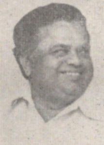

HARI KRISHNA SHASTRI

Key Tenures:
Ministry of Education, Minister of State
1988 - 1989
Ministry of Agriculture, Minister of State
1988 - 1989
Rajiv Gandhi Ministry
Department of Agricultural Research and Education
Minister of State
Ministry of Education
Minister of State
Ministry of Agriculture
Minister of State
Department of Agricultural Research and Education
Minister of State
Ministry of Education
Minister of State
Ministry of Agriculture
Minister of State
Department of Agricultural Research and Education
Minister of State
Rajiv Gandhi Ministry
Tenure Info
Department of Agricultural Research and Education,
Minister of State
14 February 1988 - 15 April 1988
Orders
1_Upload_2327.pdf
1_Upload_2322.pdf

Rajiv Gandhi
o-Rajiv_Gandhi.htmlPrime Minister
1 November 1984 - 2 December 1989
Hari Krishna Shastri
o-Hari_Krishna_Shastri.htmlMinister of State
14 February 1988 - 15 April 1988
Relevant Orders
1_Upload_2327.pdf[27]14 Feb 1988Change of Portfolio1_Upload_2321.pdf[32]19 Feb 1988Council of Ministers